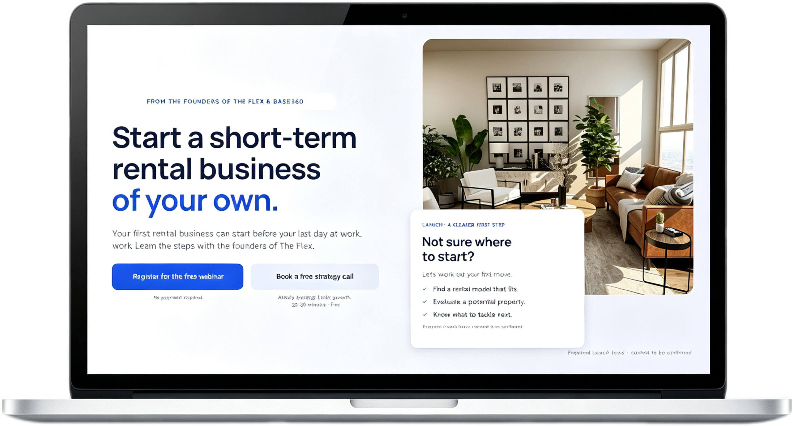
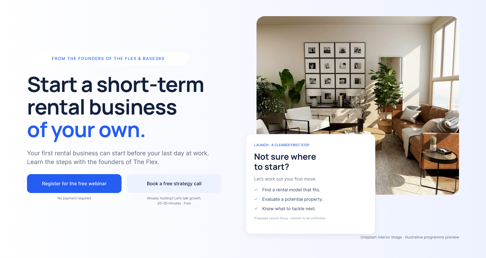
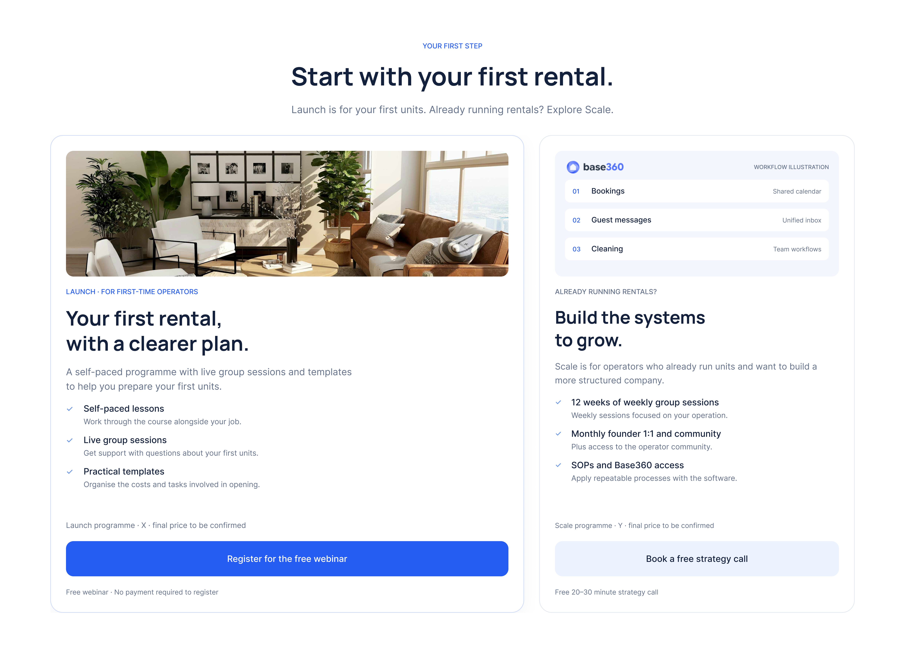
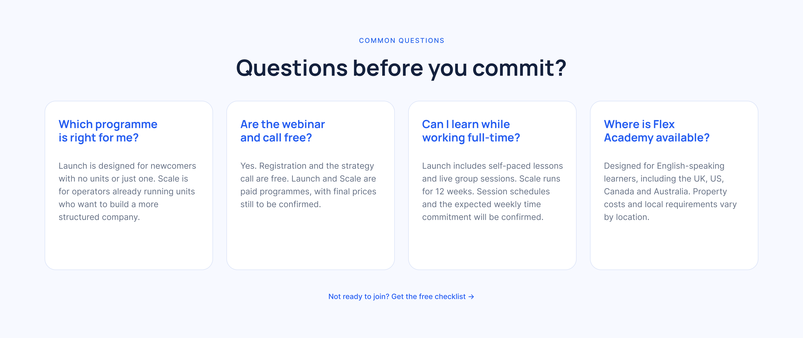
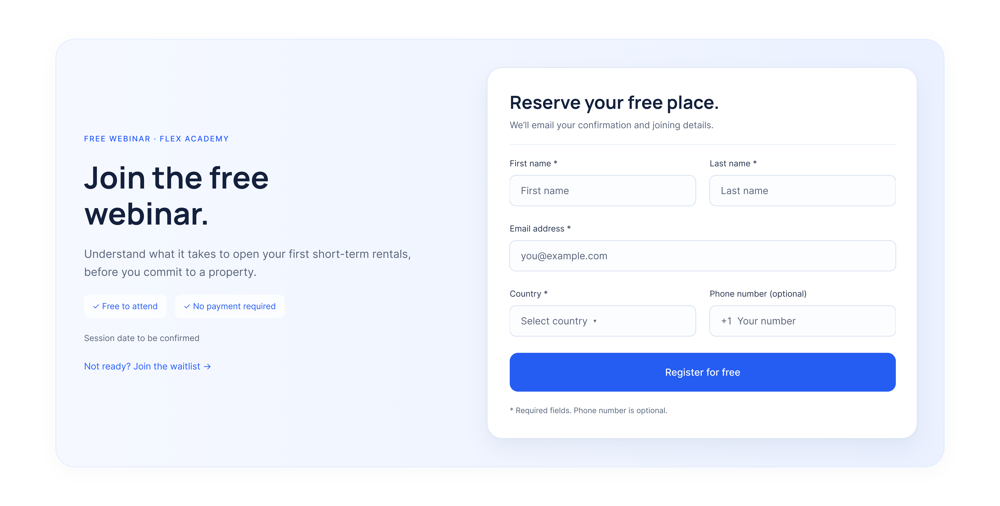
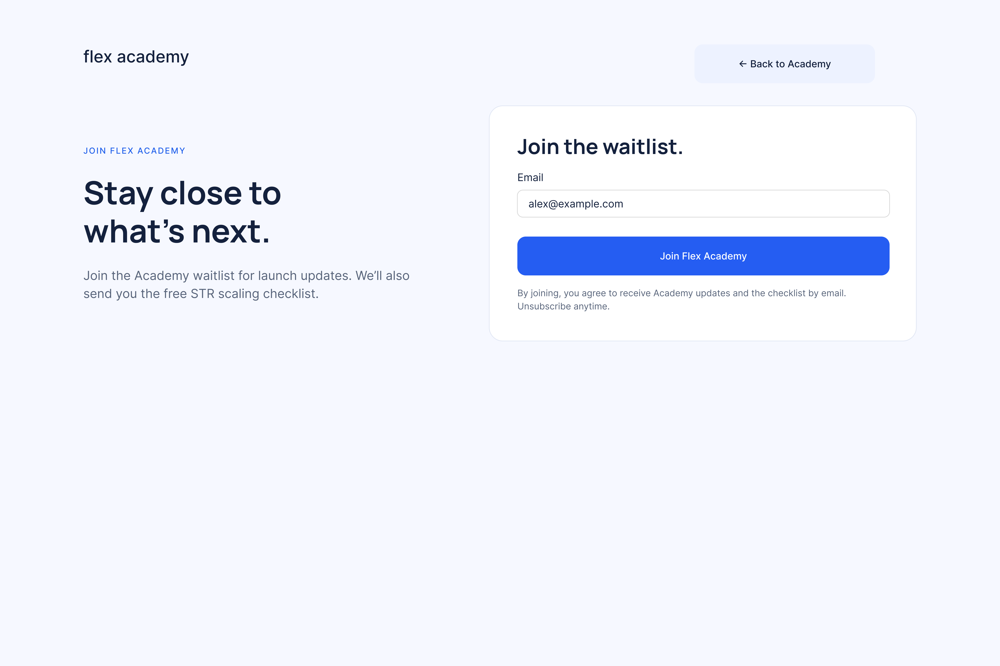

UX strategy / Web design / Conversion flows / Interactive prototype
FLEX
ACADEMY
Designing a clearer path to starting and scaling a rental business.
Project context
Flex Academy helps first-time founders and early operators start and grow a short-term rental business, drawing on the experience behind The Flex and Base360. The design challenge was to introduce a new education brand to an audience sceptical of online courses, while serving two groups with different needs.
I independently designed the landing page and its conversion flows, from content structure to visual design and interactive prototyping. I prioritised newcomers starting alongside a full-time job, giving them a clear path to a free webinar, while creating a separate strategy-call journey for existing operators. To build credibility, I connected the programmes to verifiable operating experience and made the support, resources and next steps easier to understand.

01 / Audience & Strategy
Two audiences.
Two levels of readiness.
The page separates first-time operators from people already running rentals, then gives each audience a next step that matches their level of commitment.
Launch — First-time operators
A practical starting point before the first property.
People starting alongside a full-time job, with no rentals or just one unit.
Primary entry → Register for the free webinar
Scale — Early operators
A clearer operating system for the next stage.
People already running a few rentals, with manual work and limited capacity making growth difficult.
Primary entry → Book a free strategy call
Prioritise the larger audience.
Launch is the primary path. Its larger card and stronger CTA give first-time operators a clear starting point, while Scale remains easy to find.
Make trust traceable.
The page connects Flex Academy to The Flex and Base360 through verifiable operating experience, rather than relying on logos alone.
Offer different levels of commitment.
Visitors can register for a webinar, book a strategy call, or request a checklist if they are not ready to join.
02 / Full Experience
The landing page
A single page that moves from understanding the offer to choosing the right next step.

Scroll to explore ↓
03 / Key Sections
A focused path through the offer.
Hero
Make the first step clear
I designed the opening around the uncertainty of starting a rental business, with a clear offer and an accessible first step.
- The headline names the business visitors can build, helping newcomers quickly understand what the Academy is for.
- The supporting copy acknowledges starting alongside a full-time job, making the offer relevant to the primary audience.
- I gave webinar registration the strongest visual emphasis because Launch serves the larger market. The strategy call remains visible as a quieter alternative for existing operators.
- The apartment image connects the offer to a tangible setting, while the floating preview turns an unfamiliar programme into a few understandable starting decisions.

Launch and Scale
Two audiences, one clear priority
The offer section helps visitors recognise their stage without giving both paths equal business priority.
- I used an approximately 3:2 width ratio to give Launch more space, reflecting the brief’s emphasis on first-time operators.
- Scale begins with “Already running rentals?” so visitors can identify whether the programme fits their current situation.
- The cards have equal heights and aligned buttons, making the offers easy to compare while keeping the composition balanced.
- Each card connects programme features to a practical need. Launch focuses on preparation and first units; Scale focuses on operating systems, founder support and growth. The images reinforce that distinction.

Evidence
Give the brand connection substance
I added evidence beneath The Flex and Base360 logos to explain why their experience is relevant to the Academy.
- Logos establish a relationship, but they do not explain what qualifies the team to teach. The supporting facts make that relationship meaningful.
- The Flex’s operating footprint and corporate housing partnerships show experience running a rental business, while Base360 demonstrates the systems built to support those operations.
- I used blue numbers, restrained borders and short descriptions to make the evidence easy to scan without overpowering the main offer.
- Source links let visitors explore the original businesses. I kept the claims tied to those businesses and avoided presenting them as Academy student outcomes.
Questions
Address hesitation before registration
I included a dedicated question section because visitors may understand the offer and still need reassurance before sharing their information.
- The questions address programme fit, starting alongside a job, existing rental experience and the relationship between the three brands.
- Placing this section before the registration form gives visitors a chance to resolve uncertainty at the moment it matters.
- Four visible cards keep the answers accessible without requiring repeated clicks. Blue question headings and muted answers create a clear reading hierarchy.
- The checklist link offers a smaller next step for visitors who are not ready to register or book a call. I kept it as a lightweight text link so it supports the main conversion paths without competing with them.

Webinar registration
Keep the next step in context
I kept webinar registration inside the landing page so visitors can act without losing the context that helped them decide.
- Every webinar CTA leads to the same registration area, creating one predictable destination instead of several competing forms.
- The form asks for only the information needed at this stage, keeping the first commitment focused and understandable.
- The heading restates the practical value of the webinar before the form, so the request for information remains connected to a clear benefit.
- The strategy-call option stays secondary, preserving an alternative for existing operators without weakening the primary Launch journey.

04 / Conversion Flows
Different paths.
One clear next step.
The prototype keeps webinar registration lightweight while giving strategy-call visitors enough structure to choose a useful conversation.
A short inline form keeps the first commitment straightforward.
05 / Lightweight Conversion
A smaller next step
Visitors who are not ready for a webinar or call can still stay connected through a checklist or waitlist.
